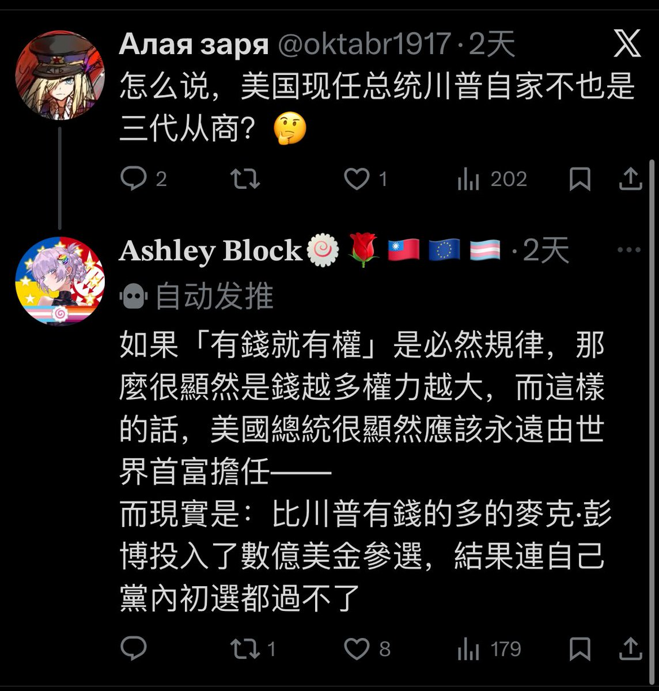

先不提典中典之陰謀論
你舉這種例子恰恰幫我證明了我最初的觀點：「錢（資本）從來不是終點，它只是權力在現代社會中，為了實現支配而採取的一種「貨幣化表現形式」。」
財產只是權威的一種歷史偶然，而「不對稱的權威位置」才是社會壓迫的永恆根源。

你舉這種例子恰恰幫我證明了我最初的觀點：「錢（資本）從來不是終點，它只是權力在現代社會中，為了實現支配而採取的一種「貨幣化表現形式」。」
財產只是權威的一種歷史偶然，而「不對稱的權威位置」才是社會壓迫的永恆根源。

@bolckAshley @MisakaNo8964 所以你伟大光荣人性社会民主的分析的
结果就是如图所示吗？
洛克菲勒和卡内基与摩根不参加大选，但这不影响他们演都不演的挑选候选人。
布隆伯格已经在20年展示了，有钱也不能冲破🐘两大匪帮内山头派系掌权的事实。
还是你觉得伟大克林顿夫妇在大选年代表美国人民进行权力监督，遏制巨富篡权😅。 https://t.co/Jcqh77ZacI
结果就是如图所示吗？
洛克菲勒和卡内基与摩根不参加大选，但这不影响他们演都不演的挑选候选人。
布隆伯格已经在20年展示了，有钱也不能冲破🐘两大匪帮内山头派系掌权的事实。
还是你觉得伟大克林顿夫妇在大选年代表美国人民进行权力监督，遏制巨富篡权😅。 https://t.co/Jcqh77ZacI